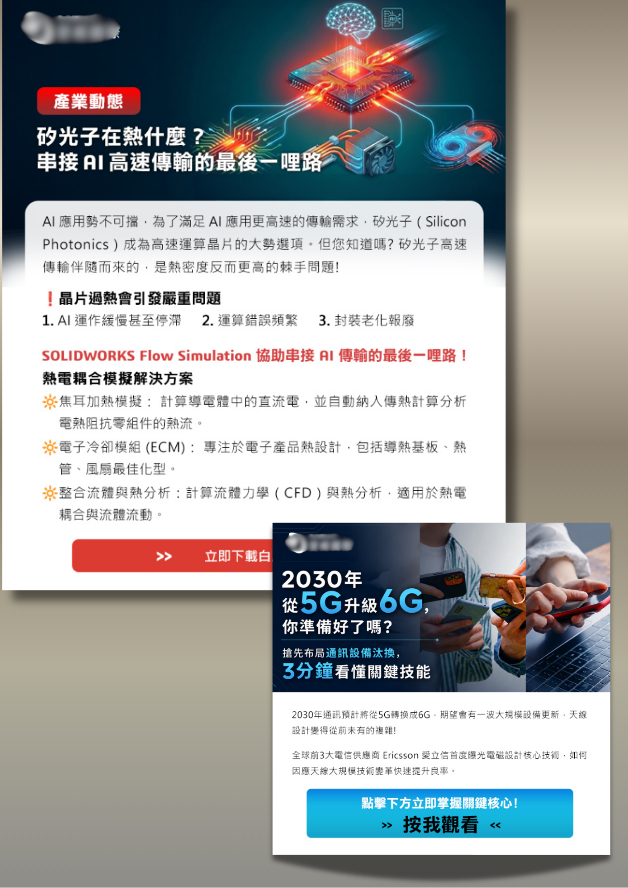

整合 SEO 流量、高轉化率落地頁與 Email 自動化，打造高質量的自動獲客漏斗

針對 B2B 科技與製造業產品決策週期長、客戶信任門檻高的特性，本專案透過精準的內容策略與 Landing Page 設計，大幅提升白皮書下載與線上詢價表單的轉換率。
我們可以針對您的企業產品，量身打造專屬的獲客架構。
點選下方分類，查看更多不同主題的專案實績
協助科技與製造業產品釐清定位、擬定進入市場策略與 Campaign 規劃。
將複雜技術轉化為具說服力的行銷語言，包含 SEO 文章、Sales Deck 與新聞稿。
設定 GA4 追蹤架構、打造視覺化成效儀表板與廣告 KPI 評估。